6 Analyse de variance
- Mise en place : Télécharger le dossier exo6 et décompressez le sur votre ordinateur. Puis ouvrez le projet R
exo6.Rprojdans Rstudio.
6.1 Préparation des données
6.1.1 Chargement du fichier
On charge un fichier statistique appelé tips.csv où les séparateurs sont des points-virgules et les décimales des points.
don<-read.table(file = "resources/data/tips/tips.csv",
sep = ";",
header = T)
head(don) IDEN TOTBILL TIP SEX SMOKER DAY TIME SIZE
1 R001 16.99 1.01 1 0 6 1 2
2 R002 10.34 1.66 0 0 6 1 3
3 R003 21.01 3.50 0 0 6 1 3
4 R004 23.68 3.31 0 0 6 1 2
5 R005 24.59 3.61 1 0 6 1 4
6 R006 25.29 4.71 0 0 6 1 46.1.2 Contenu du fichier
Ce dossier contient les pourboires (tips en anglais, d’où le nom du fichier) d’un serveur dans un restaurant américain aux débuts des années 1990. Le restaurant était dans un centre commercial. Il y avait une zone fumeurs et une zone non fumeurs.Les données indiquent le prix du repas, le pourboire, le sexe de la personne qui a payé et donné le pourboire, si c’était dans la zone fumeurs ou non, le jour où le repas a été pris, si c’était en journée ou en soirée et enfin, le nombre de convives.
Sources : Ces données sont disponibles dans le package R nommé rggobi et sont décrites dans l’ouvrage de Cook et Swayne intitulé Interactive and Dynamic Graphics for Data Analysis. Elles font partie des données d’exemple du livre de Bryant et Smith dont la première édition est parue en 1995 dont le titre est Practical Data Analysis: Case Studies in Business Statistics.
6.1.3 Dictionaire des variables
- IDEN : identifiant du repas
- TOTBILL : prix du repas (en dollars des années 1990)
- TIP : pourboire (en dollars des années 1990)
- SEX : sexe de la personne qui a payé (0 = Homme, 1 = Femme)
- SMOKER : la personne qui a payé est non-fumeur (O) ou fumeur (1)
- DAY : jour de la semaine (1 = dimanche, 2 = lundi, 3 = mardi, …)
- TIME : repas pris en journée (0) ou le soir (1)
- SIZE : nombre de convives
6.1.4 Recodage des variables
Le type de plusieurs variables est incorrect. On transforme les codes numériques en facteur et on recode les niveaux en français :
don$IDEN<-as.character(don$IDEN)
don$SEX<-as.factor(don$SEX)
levels(don$SEX)<-c("Homme","Femme")
don$SMOKER<-as.factor(don$SMOKER)
levels(don$SMOKER)<-c("Non fumeur", "Fumeur")
don$DAY<-as.factor(don$DAY)
levels(don$DAY)<-c("Mercredi","Jeudi","Vendredi","Samedi")
don$TIME<-as.factor(don$TIME)
levels(don$TIME)<-c("Journée","Soirée")6.1.5 Ajout d’une nouvelle variable
On crée la variable PCT qui est le rapport entre le pourboire (TIP) et le prix total (TOTBILL) du repas exprimé en pourcentage.
don$PCT<-100*don$TIP/don$TOTBILL6.1.6 Résumé de l’ensemble du tableau
summary(don) IDEN TOTBILL TIP SEX
Length:244 Min. : 3.07 Min. : 1.000 Homme:157
Class :character 1st Qu.:13.35 1st Qu.: 2.000 Femme: 87
Mode :character Median :17.80 Median : 2.900
Mean :19.79 Mean : 2.998
3rd Qu.:24.13 3rd Qu.: 3.562
Max. :50.81 Max. :10.000
SMOKER DAY TIME SIZE PCT
Non fumeur:151 Mercredi:62 Journée: 68 Min. :1.00 Min. : 3.564
Fumeur : 93 Jeudi :19 Soirée :176 1st Qu.:2.00 1st Qu.:12.913
Vendredi:87 Median :2.00 Median :15.477
Samedi :76 Mean :2.57 Mean :16.080
3rd Qu.:3.00 3rd Qu.:19.148
Max. :6.00 Max. :71.034 6.2 Rappels sur la régression
6.2.1 La distribution de PCT est-elle normale ?
hist(don$PCT, breaks = 10,col="lightyellow",probability = TRUE)
lines(density(don$PCT,bw=3),col="red",lwd=1)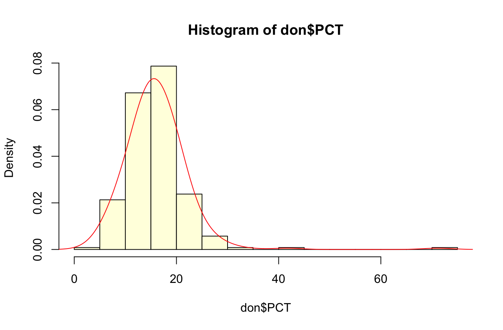
La distribution semble normale . Mais est-ce l’avis du test de Shapiro ?
shapiro.test(don$PCT)
Shapiro-Wilk normality test
data: don$PCT
W = 0.79943, p-value < 2.2e-16Que nous apprend la boxplot ?
boxplot(don$PCT, col="lightyellow",horizontal = T)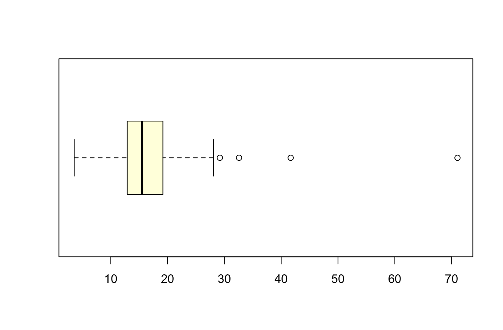
La distribution devient presque parfaitement gaussienne si on retire les 4 valeurs exceptionnelles !
don2<-don[don$PCT<30,]
shapiro.test(don2$PCT)
Shapiro-Wilk normality test
data: don2$PCT
W = 0.99435, p-value = 0.5066hist(don2$PCT, breaks = 10,col="lightyellow",probability = TRUE)
lines(density(don2$PCT,bw=3),col="red",lwd=1)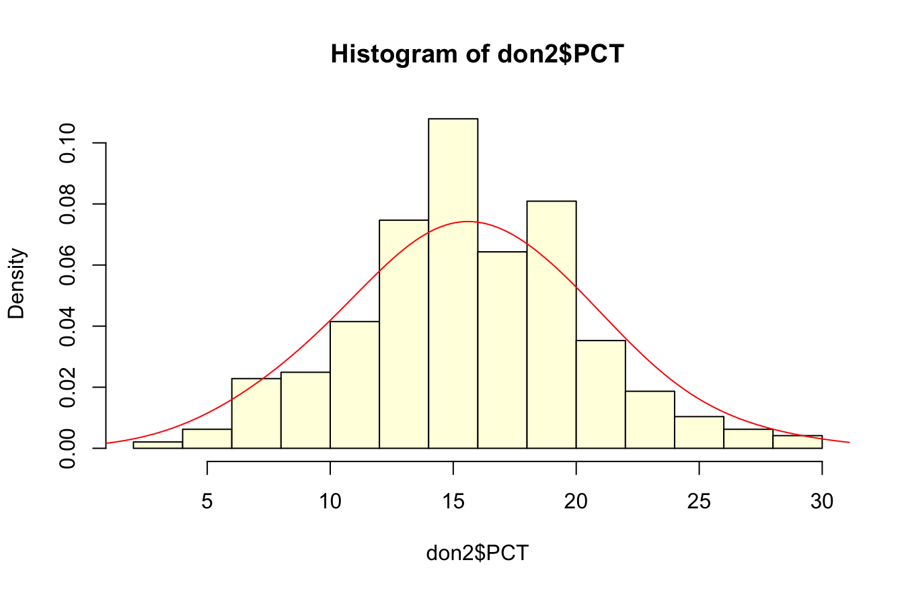
6.2.2 Y-a-t-il une relation entre le prix du repas et le pourboire ?
On fait le graphique …
plot(don2$TOTBILL,don2$TIP)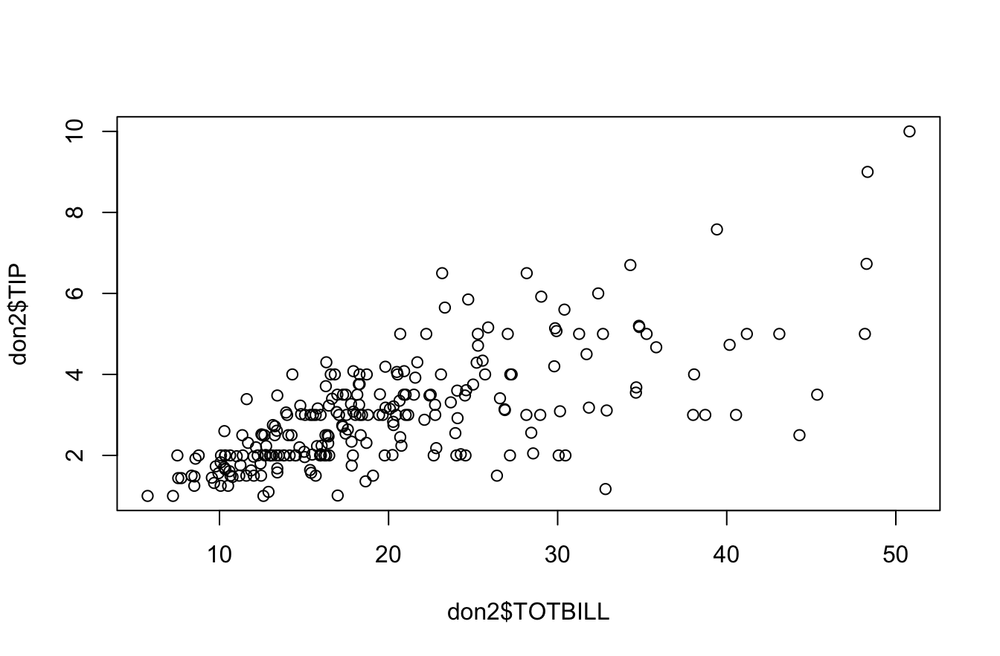
Puis on teste le coefficient de Pearson et celui de Sperman
cor.test(don2$TIP,don2$TOTBILL)
Pearson's product-moment correlation
data: don2$TIP and don2$TOTBILL
t = 14.906, df = 239, p-value < 2.2e-16
alternative hypothesis: true correlation is not equal to 0
95 percent confidence interval:
0.6223204 0.7543075
sample estimates:
cor
0.6941023 cor.test(don2$TIP,don2$TOTBILL, method="spearman")Warning in cor.test.default(don2$TIP, don2$TOTBILL, method = "spearman"):
Cannot compute exact p-value with ties
Spearman's rank correlation rho
data: don2$TIP and don2$TOTBILL
S = 688482, p-value < 2.2e-16
alternative hypothesis: true rho is not equal to 0
sample estimates:
rho
0.7048791 6.2.3 Modèle de régression
On calcule le modèle de régression
mareg<-lm(don2$TIP~don2$TOTBILL)plot(don2$TOTBILL,don2$TIP, xlab="Repas ($)",ylab = "Pourboire ($)",pch=19,cex=0.5)
abline(mareg,col="red",lwd=1)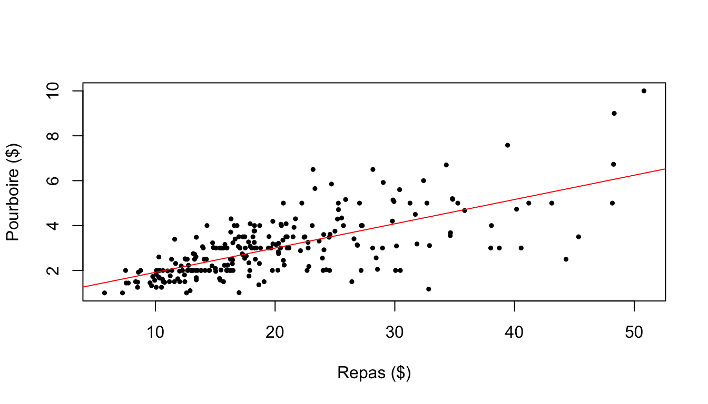
6.3 Test d’égalité des moyennes
6.3.1 Hypothèses
On considère une variable Y quantitative continue définie sur une population de réféence P et une variable X qualitative à deux modalités divisant P en deux sous population P1 et P2.
Soit par exemple la variable Y = PCT et la variable X = SEX. On peut se demander si les femmes sont plus généreuses que les hommes, les hommes sont plus généreux que les femmes, les hommes sont différents des femmes, etc…
Y<-don2$PCT
nomY <-"Pourboire relatif (%)"
X<-don2$SEX
nomX <- "Sexe du client"
#X<-don2$SMOKER
#nomX<- "Tabagisme"
#X<-don2$TIME
#nomX<- "Moment de la journée"6.3.2 Visualisations
Le plus simple est d’utiliser boxplot() en version de base …
boxplot(Y~X)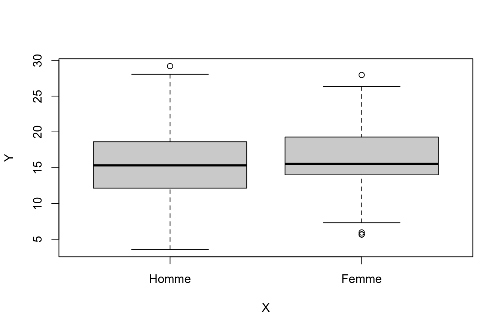
… ou améliorée
boxplot(Y~X,horizontal=T, xlab = nomY, ylab=nomX, col="gray80")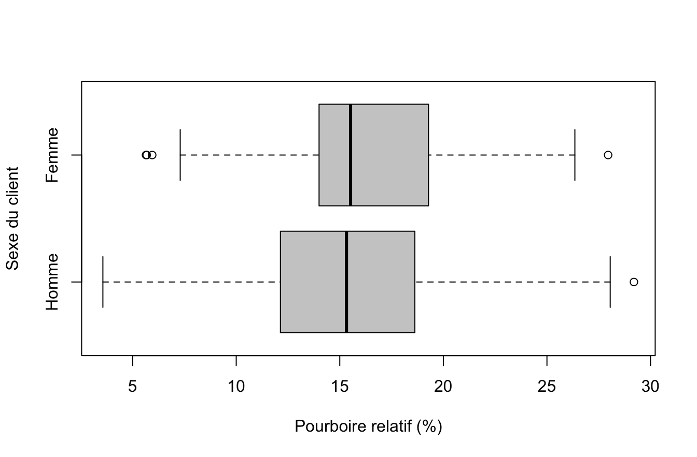
On peut aussi utiliser le package beanplot() en version simple …
library(beanplot)
beanplot(Y~X)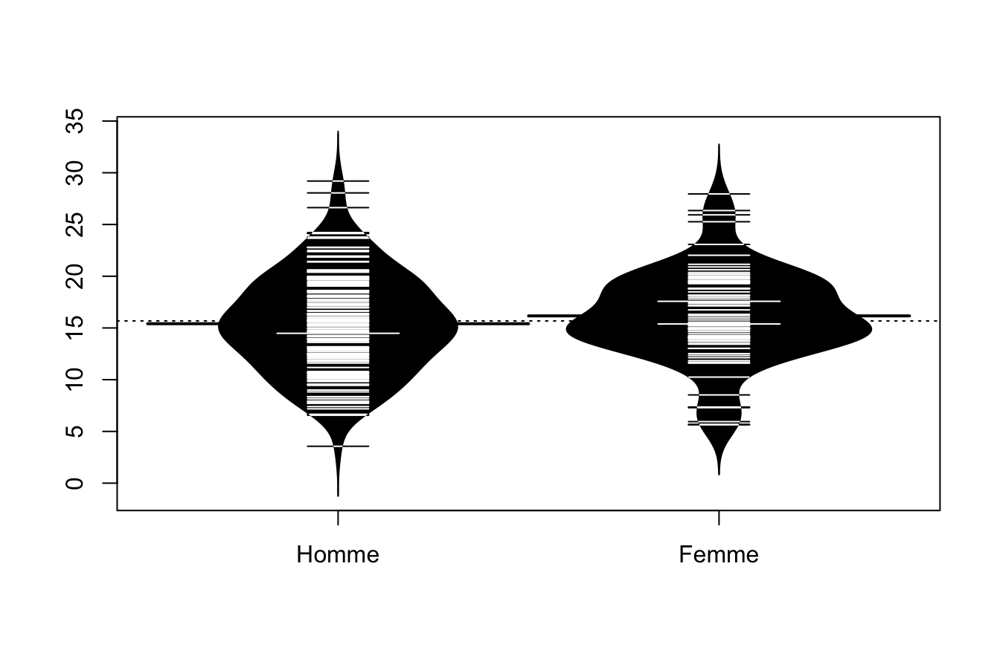
… ou améliorée :
library(beanplot)
beanplot(Y~X,horizontal=T, xlab = nomY, ylab=nomX,col = "gray80")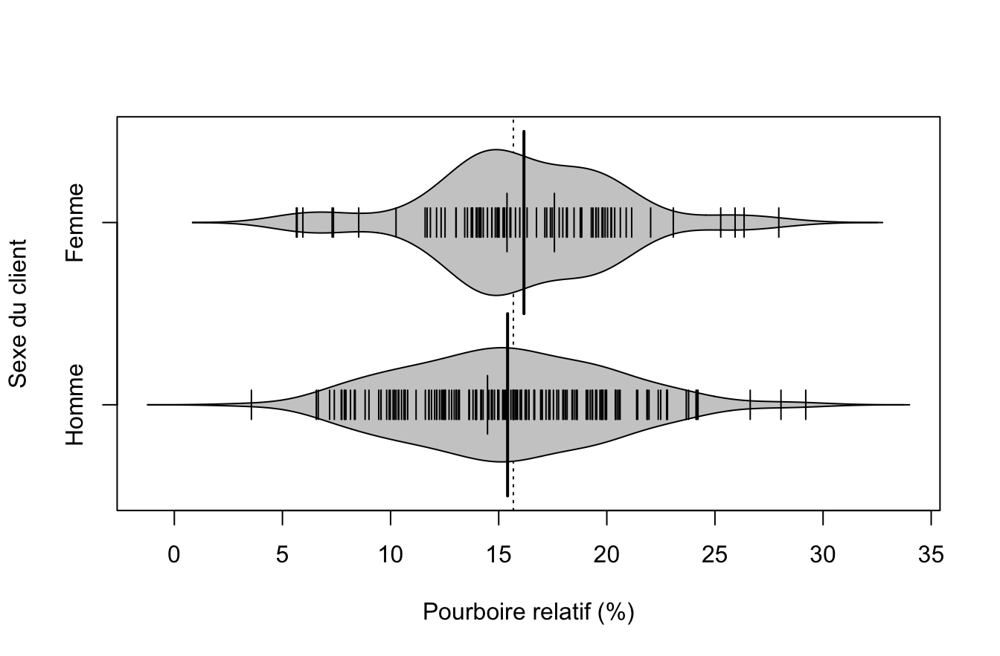
6.3.3 Paramètres principaux
On détermine la moyenne et l’écart-type de chaque échantillon avec la fonction tapply() couplée avec les fonctions mean(), sd() ou summary()
tapply(Y,X, mean) Homme Femme
15.41076 16.16741 tapply(Y,X,sd) Homme Femme
4.732686 4.329426 tapply(Y,X, summary)$Homme
Min. 1st Qu. Median Mean 3rd Qu. Max.
3.564 12.136 15.325 15.411 18.622 29.199
$Femme
Min. 1st Qu. Median Mean 3rd Qu. Max.
5.643 13.999 15.522 16.167 19.284 27.952 6.3.4 Test d’égalité des moyennes
Si la distribution est gaussienne on utilise le test de Student :
t.test(Y~X)
Welch Two Sample t-test
data: Y by X
t = -1.254, df = 186.21, p-value = 0.2114
alternative hypothesis: true difference in means between group Homme and group Femme is not equal to 0
95 percent confidence interval:
-1.9470273 0.4337437
sample estimates:
mean in group Homme mean in group Femme
15.41076 16.16741 Si ce n’est pas le cas et s’il y a des valeurs exceptionnelles on préfèrera le test de Wilcoxon basé sur les rangs des valeurs (comme le coefficient de corrélation de Spearman)
wilcox.test(Y~X)
Wilcoxon rank sum test with continuity correction
data: Y by X
W = 5953, p-value = 0.1908
alternative hypothesis: true location shift is not equal to 0Lorsque les deux tests divergent dans leur conclusions, il y a certainement un problème de violation de l’hypothèse gaussienne. Dans ce cas, il faut sans doute transformer Y ou retirer des valeurs exceptionnelles (Cf.cours sur la corrélation et la régression)
6.4 Analyse de variance
6.4.1 Hypothèses
On considère une variable Y quantitative continue définie sur une population de réféence P et une variable X qualitative à k modalités divisant P en k sous population P1…Pk.
Soit par exemple la variable Y = PCT et la variable X = DAY. On peut se demander si la générosité des pourboires varie en fonction des jours de la semaine (mercredi, jeudi, vendredi ou samedi). On fera toutefois attention au fait que l’échantillon n’est pas très équilibré
table(don2$DAY)
Mercredi Jeudi Vendredi Samedi
62 19 86 74 6.4.2 Calcul des paramètres principaux
On va calculer les paramètres principaux de chacune des quatre sous population à l’aide de la superfonction tapply() dont la syntaxe est la suivante
tapply(variable à analyser, variable de partition , function)
La fonction tapply() s’applique sur les tableaux (data.frame). Il y a des fonctions équvalentes pour les listes, les matrices, etc…
moy<-tapply(X = don2$PCT, INDEX = don2$DAY, FUN = mean)
moyMercredi Jeudi Vendredi Samedi
16.12756 16.99130 15.11450 15.61781 ect<-tapply(don2$PCT, don2$DAY, sd)
ectMercredi Jeudi Vendredi Samedi
3.865182 4.766531 4.803544 4.858665 100*ect/moyMercredi Jeudi Vendredi Samedi
23.96631 28.05277 31.78104 31.10976 tapply(don2$PCT, don2$DAY, summary)$Mercredi
Min. 1st Qu. Median Mean 3rd Qu. Max.
7.296 13.821 15.385 16.128 19.269 26.631
$Jeudi
Min. 1st Qu. Median Mean 3rd Qu. Max.
10.36 13.37 15.56 16.99 19.66 26.35
$Vendredi
Min. 1st Qu. Median Mean 3rd Qu. Max.
3.564 12.373 15.099 15.114 18.767 29.199
$Samedi
Min. 1st Qu. Median Mean 3rd Qu. Max.
5.945 11.737 15.965 15.618 18.494 28.054 6.4.3 Visualisation
On utilise comme précédemment boxplot() :
boxplot(don2$PCT~don2$DAY, col="gray80")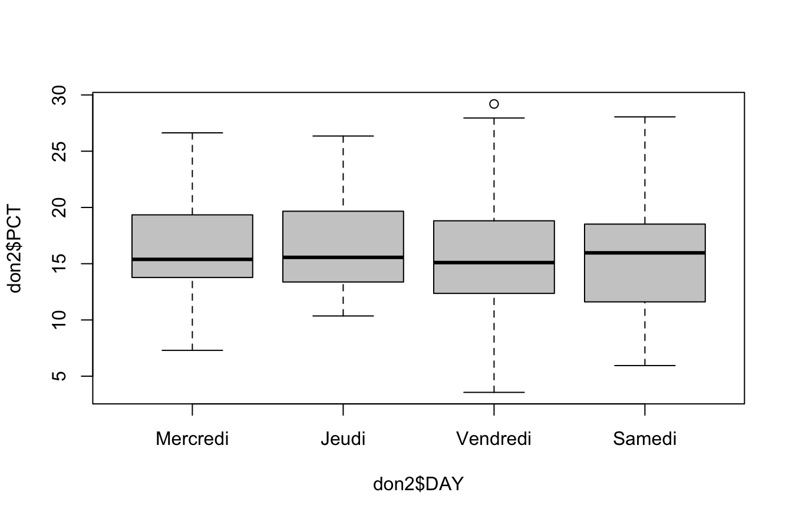
Ou bien beanplot() :
library(beanplot)
beanplot(don2$PCT~don2$DAY,col = "gray80")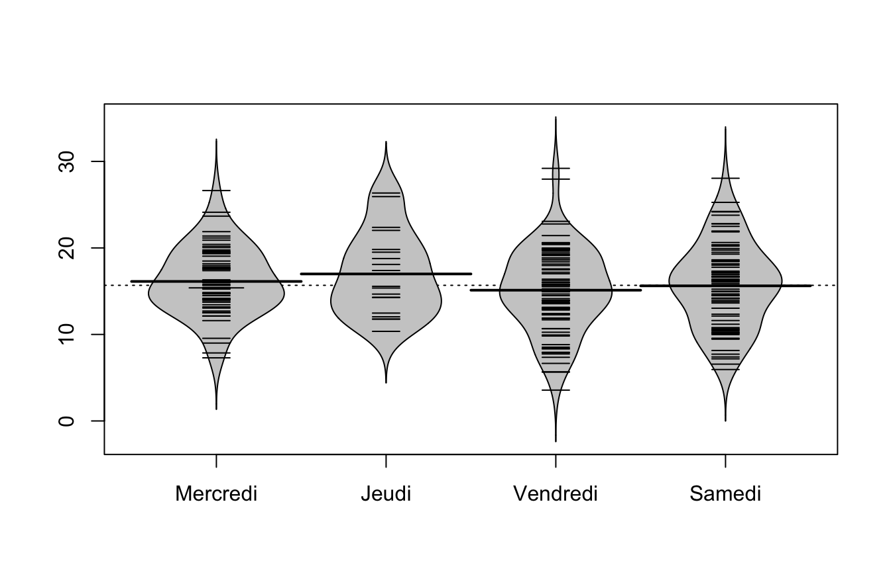
6.4.4 Modélisation simple
La solution la plus simple est d’utiliser la fonction lm() que l’on a déjà vu pour la régression.
monmodel<-lm(don2$PCT~don2$DAY)
summary(monmodel)
Call:
lm(formula = don2$PCT ~ don2$DAY)
Residuals:
Min 1Q Median 3Q Max
-11.5507 -2.7549 -0.1519 3.2335 14.0845
Coefficients:
Estimate Std. Error t value Pr(>|t|)
(Intercept) 16.1276 0.5836 27.634 <2e-16 ***
don2$DAYJeudi 0.8637 1.2050 0.717 0.474
don2$DAYVendredi -1.0131 0.7656 -1.323 0.187
don2$DAYSamedi -0.5097 0.7912 -0.644 0.520
---
Signif. codes: 0 '***' 0.001 '**' 0.01 '*' 0.05 '.' 0.1 ' ' 1
Residual standard error: 4.595 on 237 degrees of freedom
Multiple R-squared: 0.01435, Adjusted R-squared: 0.001876
F-statistic: 1.15 on 3 and 237 DF, p-value: 0.3295On peut ensuite appliquer une analyse de variance avec anova() sur le modèle pour mesurer la variance totale et la variance résiduelle ainsi que la significativité de la relation.
anova(monmodel)Analysis of Variance Table
Response: don2$PCT
Df Sum Sq Mean Sq F value Pr(>F)
don2$DAY 3 72.9 24.293 1.1503 0.3295
Residuals 237 5004.9 21.117 Et on peut effectuer quelques diagnostics sur les résidus :
par(mfrow = c(2,2))
plot(monmodel,c(1,2,3,4))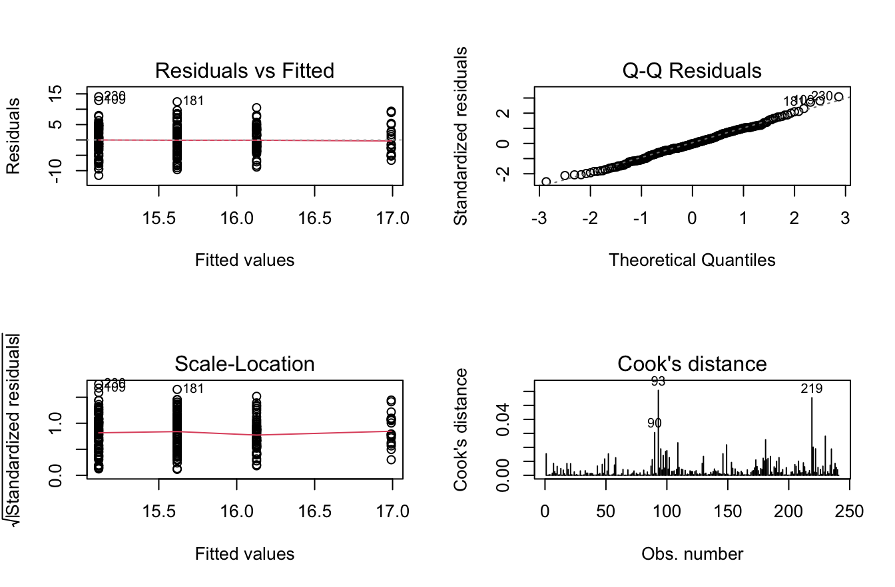
6.4.5 Modélisation avancée
D’un point de vue statistique, l’analyse de variance à un facteur fait appel à des modèles et des hhypothèses plus sophistiqués que le modèle de base présenté ici et comporte de nombreux tests. On se reportera donc ave profit aux trois cours en lignes de Claire Della Vedova pour une approche plus poussée
https://statistique-et-logiciel-r.com/anova-a-un-facteur-partie-1/
https://statistique-et-logiciel-r.com/anova-a-un-facteur-partie-2-la-pratique/
https://statistique-et-logiciel-r.com/anova-a-un-facteur-quand-les-hypotheses-ne-sont-pas-satisfaites/
6.5 Annexe : les variables hybrides
Le nombre de convives (SIZE) n’est ni une variable quantitative continue, ni une variable qualitative de type catégorielle. On peut donc l’appréhender de deux points de vue différents sur le plan statistique
variable quantitative discrète : ce qui permet d’utiliser un modèle de régression linéaire.
variable qualitative ordinale : ce qui permet d’utiliser un modèle d’analyse de variance.
6.5.1 SIZE = quantitative discrète
hist(don$SIZE, breaks=6, col="gray80")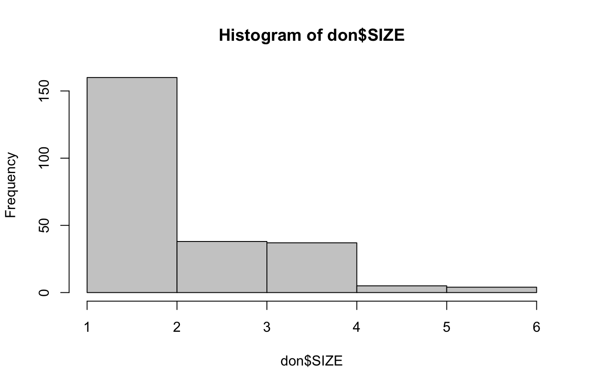
modreg<-lm(don2$PCT~don2$SIZE)
summary(modreg)
Call:
lm(formula = don2$PCT ~ don2$SIZE)
Residuals:
Min 1Q Median 3Q Max
-12.4591 -2.9738 -0.2625 3.4693 13.2193
Coefficients:
Estimate Std. Error t value Pr(>|t|)
(Intercept) 17.2116 0.8545 20.143 <2e-16 ***
don2$SIZE -0.5944 0.3108 -1.913 0.057 .
---
Signif. codes: 0 '***' 0.001 '**' 0.01 '*' 0.05 '.' 0.1 ' ' 1
Residual standard error: 4.574 on 239 degrees of freedom
Multiple R-squared: 0.01507, Adjusted R-squared: 0.01095
F-statistic: 3.658 on 1 and 239 DF, p-value: 0.057plot(don2$SIZE,don2$PCT, col="blue", pch=19, cex=0.7)
abline(modreg, col="red")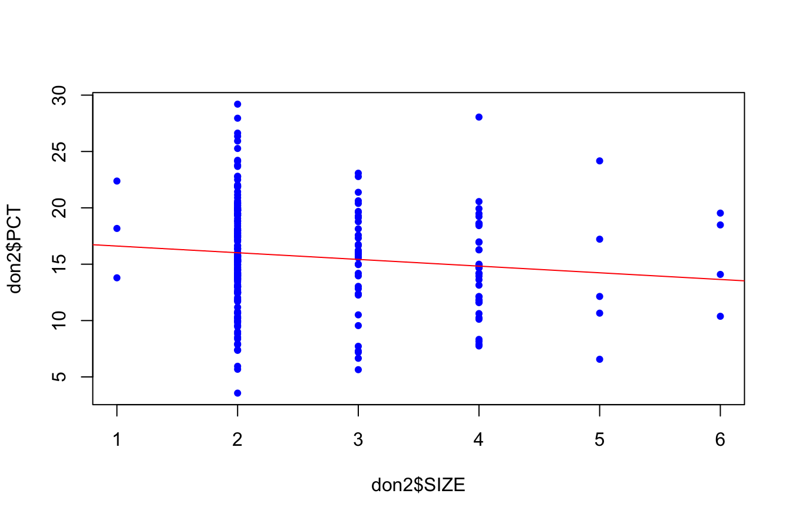
6.5.2 SIZE = qualitative ordinale
On recode les catégories trop rares …
don2$SIZE2<-as.factor(don2$SIZE)
levels(don2$SIZE2)<-c("1-2","1-2","3+","3+","3+","3+")
summary(don2$SIZE2)1-2 3+
157 84 plot(don2$SIZE2)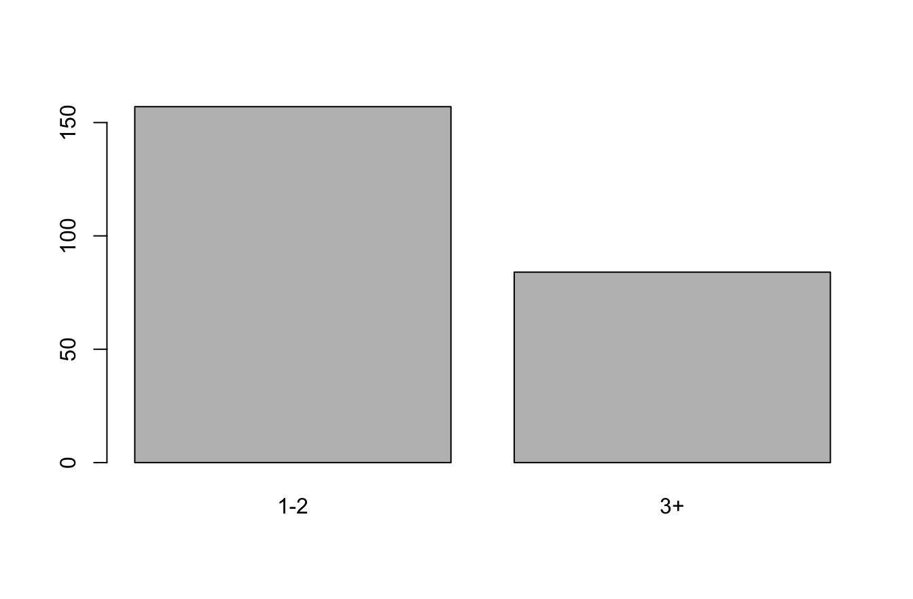
tapply(don2$PCT, don2$SIZE2, mean) 1-2 3+
16.09466 14.89818 tapply(don2$PCT, don2$SIZE2, sd) 1-2 3+
4.626275 4.472961 beanplot(don2$PCT~don2$SIZE2)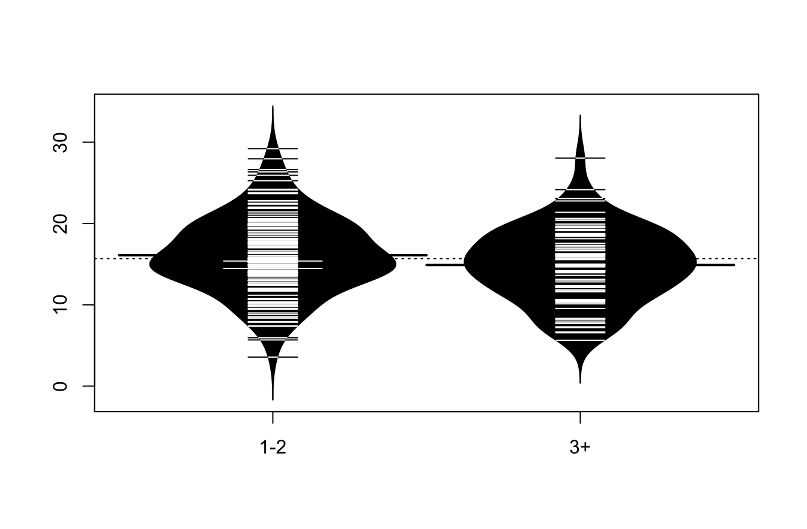
modvar<-lm(don2$PCT~don2$SIZE2)
summary(modvar)
Call:
lm(formula = don2$PCT ~ don2$SIZE2)
Residuals:
Min 1Q Median 3Q Max
-12.5308 -2.7696 -0.3176 3.4082 13.1553
Coefficients:
Estimate Std. Error t value Pr(>|t|)
(Intercept) 16.0947 0.3650 44.093 <2e-16 ***
don2$SIZE23+ -1.1965 0.6183 -1.935 0.0541 .
---
Signif. codes: 0 '***' 0.001 '**' 0.01 '*' 0.05 '.' 0.1 ' ' 1
Residual standard error: 4.574 on 239 degrees of freedom
Multiple R-squared: 0.01543, Adjusted R-squared: 0.01131
F-statistic: 3.745 on 1 and 239 DF, p-value: 0.05414